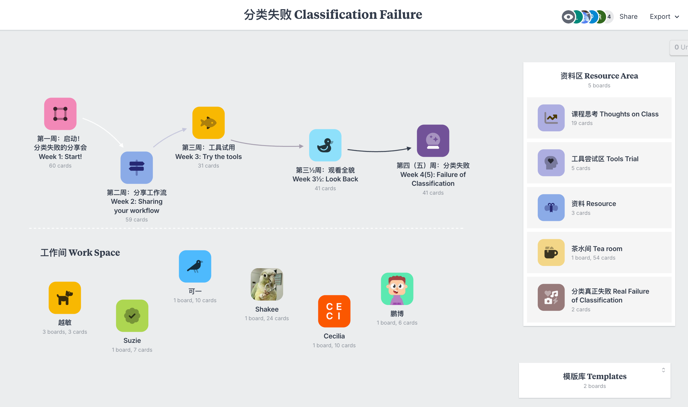
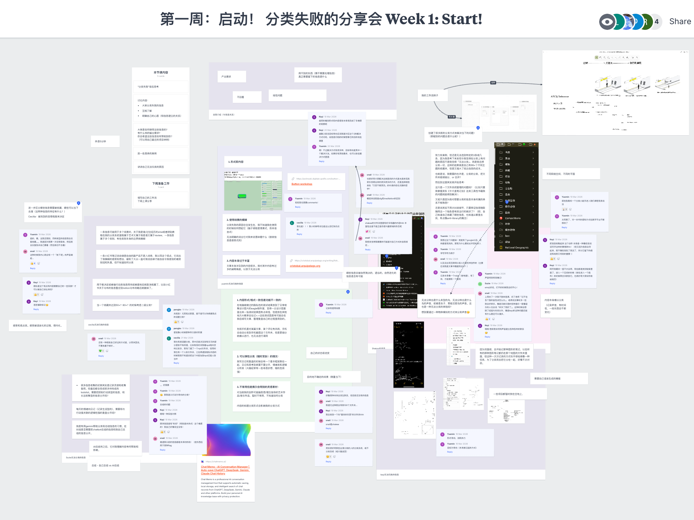
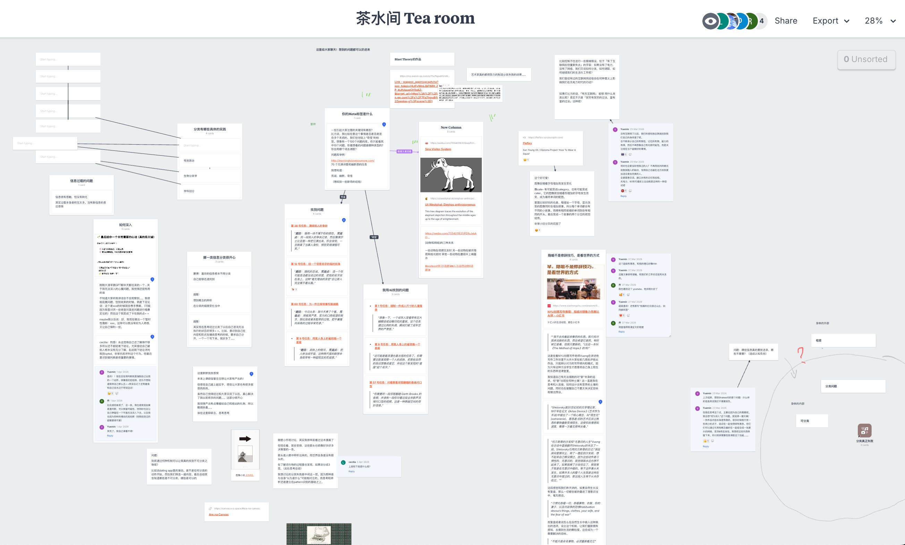
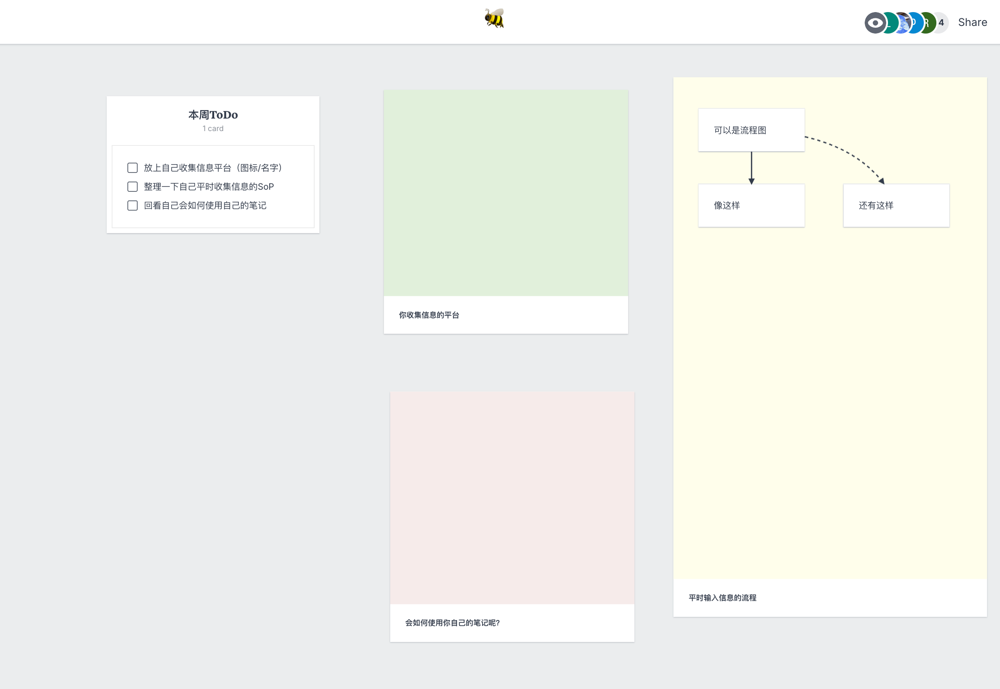

分类的不可能是个古老的问题。福柯在《词与物》里借博尔赫斯那部荒诞的分类法早就指出过：任何秩序一旦被摊开，它的任意性也随之显形。但此刻我重提分类，并不是要做一场哲学考古。
处理分类，其实是在处理一个认知框架的问题——而 AI
对人的影响，恰恰最常发生在"判断"这一层。分类的本质，是界定人与信息的关系：它是个人内部的信息经验（记忆、知识系统、感受）与外部的信息结构（既有的分类法、笔记软件的文件夹、约定俗成的目录）之间的一场博弈。
但这样一个宏大而抽象的问题，如何在"人的尺度"上被实践、被经历，让人感受到其中具体的矛盾？我选择把个人笔记作为整个工作坊的立足点，从一条具体的、无法被归类的信息开始。通过这种日常经验，我们得以慢慢看清自己内部与外部的边界，也理解人为何会一点点把决策权让渡给
AI——而这种让渡，如何恰恰扎根在人自身的局限里
The impossibility of classification is an old problem. In The Order of Things, by way of Borges's absurd
taxonomy, Foucault pointed this out long ago: once any order is laid out flat, its arbitrariness surfaces
along with it. But in raising classification again now, I am not after a piece of philosophical archaeology.
To deal with classification is to deal with a cognitive framework — and AI's influence on us most often
operates at the level of judgment. At its core, classification defines the relationship between a person and
information: it is a contest between one's internal experience of information (memory, systems of knowledge,
feeling) and the external structures of information (inherited taxonomies, the folders of a note-taking app,
conventional directories).
But how is a question this vast and abstract to be practiced, lived, and felt — in its concrete
contradictions — on a human scale? I take personal note-taking as the foothold of the entire workshop,
beginning from a single, concrete piece of information that refuses to be classified. Through this everyday
process, we come slowly to see the boundary between our inner and outer worlds, and to understand why a
person, little by little, hands their power of decision over to AI — and how that surrender is rooted
precisely in the limits of the human itself.




P1 主页面
P2 第一周
P3 茶水间
P4 个人笔记模版
P1 Main Page
P2 Week 1
P3 Tea Room
P4 Template